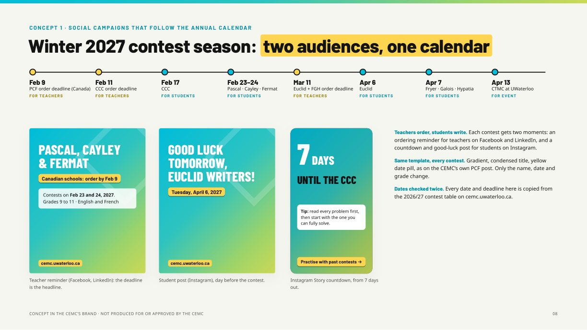
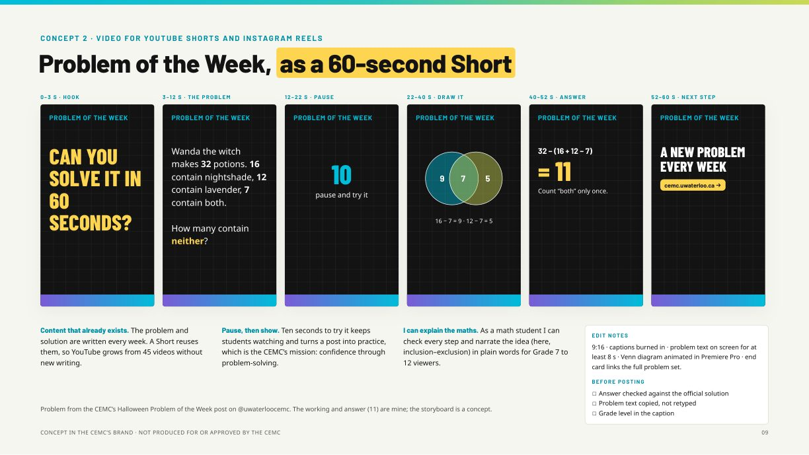
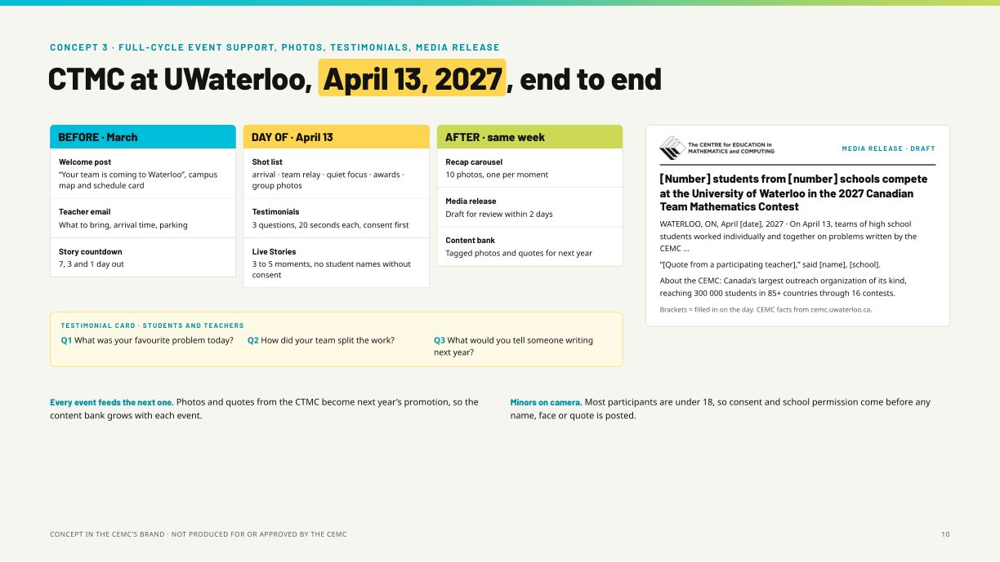
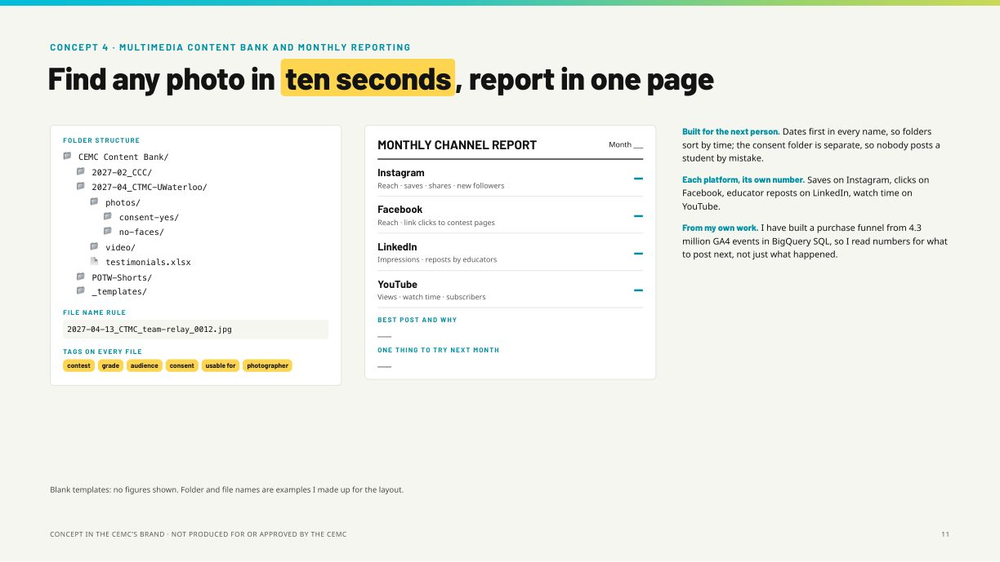
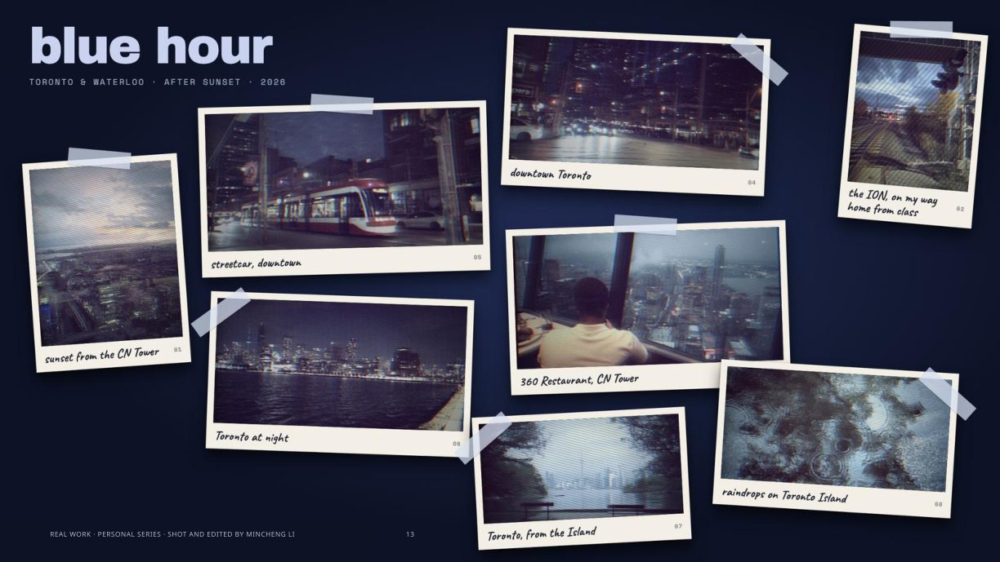

I wrote the Euclid Contest and the Canadian Computing Competition in high school. This page holds my portfolio for the CEMC: a first version of the work in the posting, built around real Winter 2027 contest dates, plus the app I designed and launched and the videos I made for it.
Each page answers one part of the posting. Dates, deadlines and the Problem of the Week come from cemc.uwaterloo.ca and @uwaterloocemc.




Memo Clock is a paid iPhone and iPad study app from our three-person team. I designed the front end, came up with the launch plan and made 14 promo videos across three releases. The app has sold 175 copies.
Photography is my hobby: I shoot people and places and edit each set into one look.
